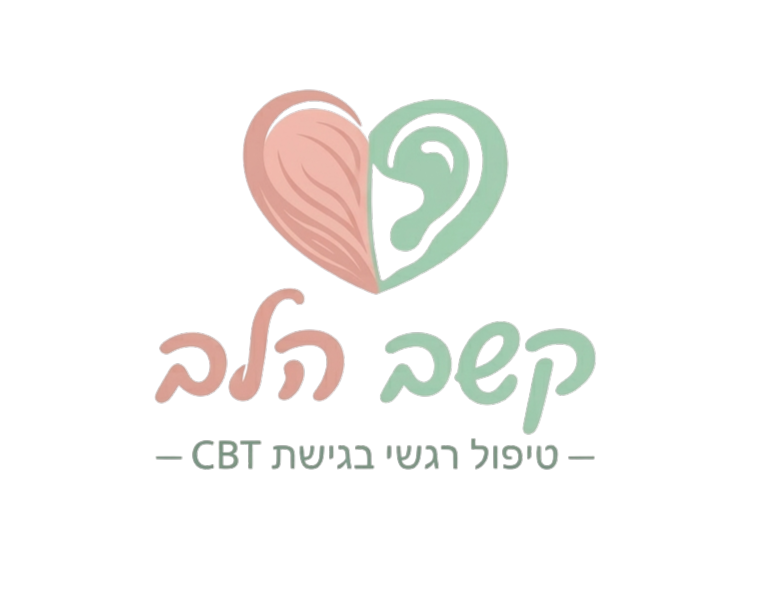

כשמשהו מרגיש "תקוע" בבית, אבל קשה לשים עליו את האצבע.
כהורים למתבגרים, אנחנו פוגשים לא מעט רגעי תסכול. האם הילד שלכם:
אחרי 7 שנים של עבודה יומיומית במסדרונות חטיבת הביניים, ראיתי מקרוב איך נראה עומס של מתבגרים – בווטסאפ הכיתתי, מול המורים, ומול הציפיות של עצמם.
בגיל ההתבגרות, המוח הוא "אתר בנייה". הקשיים נובעים לרוב מעומס על התפקודים הניהוליים, ולא מחוסר אכפתיות.
המתבגר נכנס הביתה וזורק:
"כולם שונאים אותי!"
במקום להתווכח או לגונן, חרדה זקוקה לסדר. שאלו את 3 השאלות הבאות:
"האם כולם שונאים אותך? היה לפחות ילד אחד שדיבר איתך היום?"
"יש עוד הסבר למה שקרה? אולי הילד שפגע בך היה במצב רוח רע שלא קשור אליך?"
"בוא נדייק: 'הייתה לי תקרית מבאסת עם ילד אחד, אבל זה לא אומר שכולם נגדי'."
לחצו על כל נושא כדי לראות את האתגרים הנפוצים:
חרדת בחינות: "בלקאאוט" במבחנים, דפיקות לב מואצות והימנעות מלמידה.
חרדה חברתית: הסתגרות בחדר, הימנעות ממפגשים וניתוח יתר של הודעות וואטסאפ.
דאגנות לעתיד: מחשבות קטסטרופליות, הצפת מחשבות וקושי להירדם בלילה.
דחיינות והימנעות: מטלות נערמות, תדמית של "עצלנות", וחוסר מוטיבציה לפעול.
פרפקציוניזם משתק: תסכול קיצוני מציון 90, מחיקת עבודות וקושי להתחיל משימות.
ויסות קשב: תסכול וייאוש מהמסגרת הלימודית, קושי בארגון וניהול זמן.
דימוי עצמי נמוך: הלקאה עצמית ("אני אפס"), חוסר ביטחון וויתור מראש.
דימוי גוף: השוואה אובססיבית למודלים בטיקטוק/אינסטגרם וחוסר שביעות רצון קיצוני.
משברים חברתיים: התמודדות עם חרם, דחייה חברתית, שיימינג ברשת ואלימות מילולית.
התפרצויות זעם: "פתיל קצר", טריקת דלתות, וצעקות לא פרופורציונליות בבית.
התנהגויות כפייתיות: תלישת שיער, חיטוט בעור וטקסים קטנים שמעידים על לחץ.
תלות במסכים: זמן מסך פוגעני, קשיי שינה, והימנעות מחיים חברתיים לטובת גיימינג.
שחיקת סמכות: ויכוחים בלתי פוסקים, תחושה של "הולכים על ביצים" בבית ונתק תקשורתי.
התנהלות מול המערכת: תחושת אבוד מול דרישות בית הספר, מורים וקשיים במיצוי זכויות אבחון.
טיפול קוגניטיבי-התנהגותי (CBT) ממוקד מטרה שמייצר תוצאות בשטח:
מזהים בדיוק מה תוקע אותנו (מחשבות מכשילות, עיוותי חשיבה).
טכניקות מעשיות לוויסות רגשי וניהול משימות – ב"עברית" פשוטה.
מתרגלים את הכלים בחיי היומיום עד לבניית ביטחון עצמי.
הטיפולים מתקיימים בקליניקה פרטית ודיסקרטית. החזירו את השליטה והרוגע לבית.